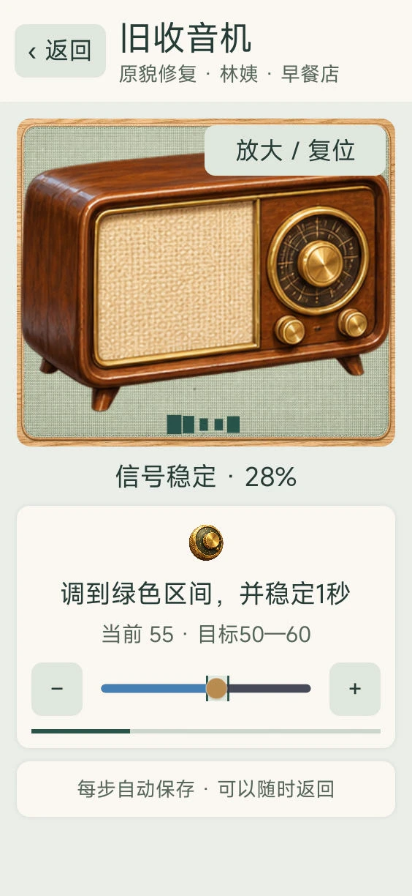
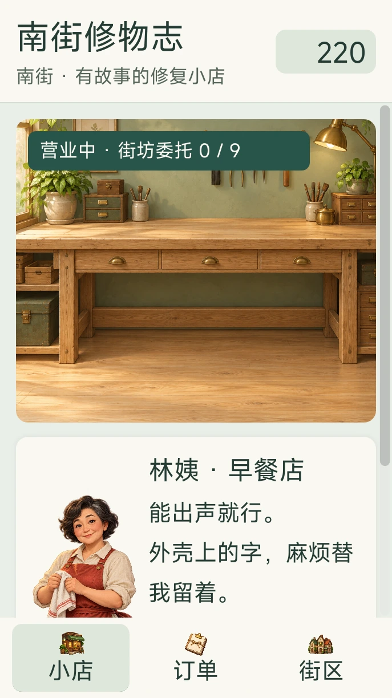
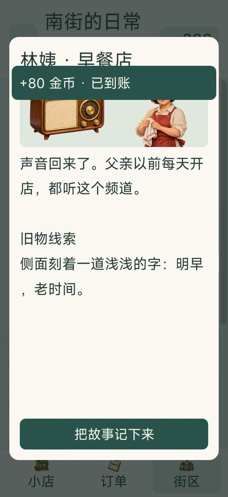
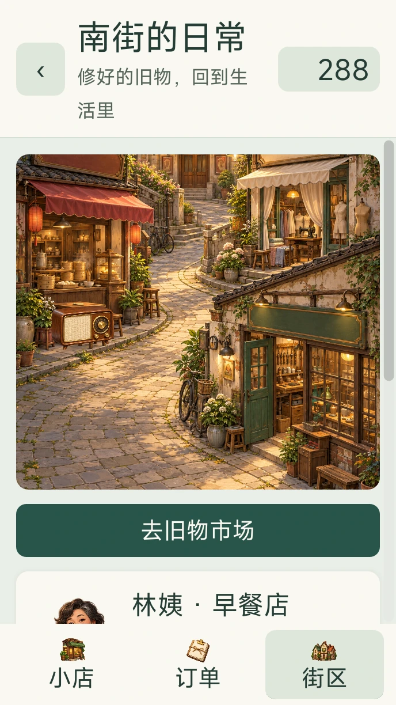

接单前看清要求和成本
工单写着要保留的细节、材料费和报酬。先看看哪些地方需要动手，哪些痕迹要留给原主人。

AI 游戏作品 / 竖屏模拟经营
在南街开一家修复小店。跟着街坊的委托清理、装配和调试旧物，靠修复收入经营店铺，也慢慢拼起街坊们的故事。
12 件旧物 · 9 份委托 · 3 位街坊
游戏画面采自 TapTap 制造 Windows Runtime。
林姨想重新听到熟悉的广播，也想留下收音机外壳上的刻字。接下工单，擦掉浮尘，装回零件，慢慢把信号调稳。把收音机还给林姨时，除了报酬，还会听到一段旧物往事。
约 34 秒竖屏实录，无声。
工单写着要保留的细节、材料费和报酬。先看看哪些地方需要动手，哪些痕迹要留给原主人。
沿着外壳逐处擦拭，清理进度会随操作推进。刻字和留下的使用痕迹也是物件的一部分。

看准卡扣、旋钮和接点的位置，按槽位提示装回零件。有些零件需要先转到正确朝向。

滑动调试杆，找到绿色目标区间后保持稳定。等进度走完，收音机就可以交回街坊手中。

在工作台旁接下街坊的委托，用修复收入添置工位。请到助手后，清理可以交给助手，装配和调试仍由你完成。

修好的收音机交给林姨，报酬立即到账，同时记下物件背后的线索。之后可以在街坊档案里翻看。

对照收购价、材料费和预计收益挑旧物。修好后可以卖掉，也可以挑一件喜欢的留在店里陈列。

做完九份街坊委托，就迎来「共同营业日」。三位街坊聚在修复后的南街，一起开门营业。